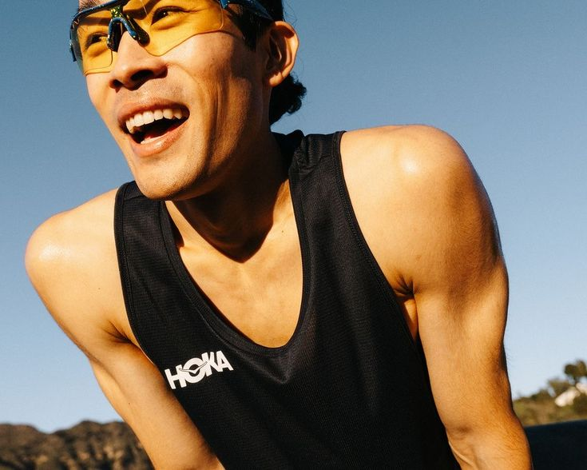
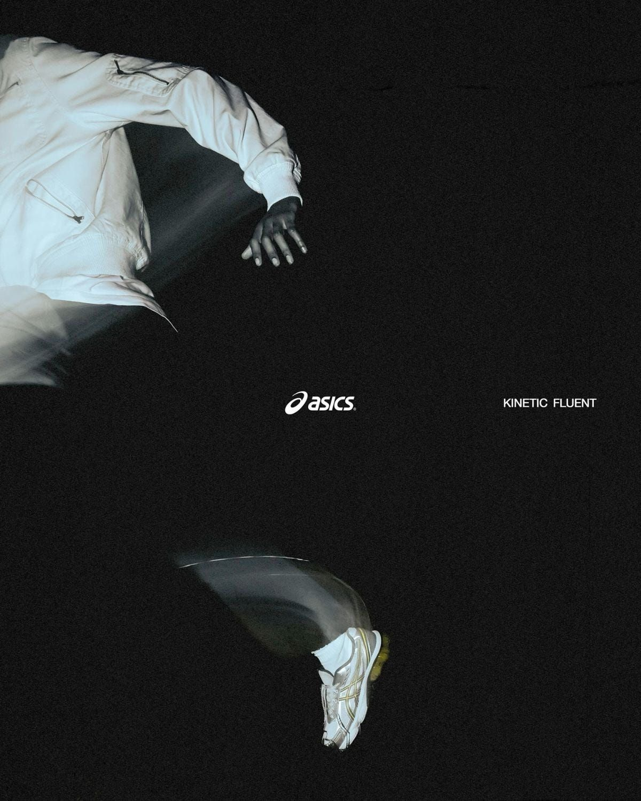
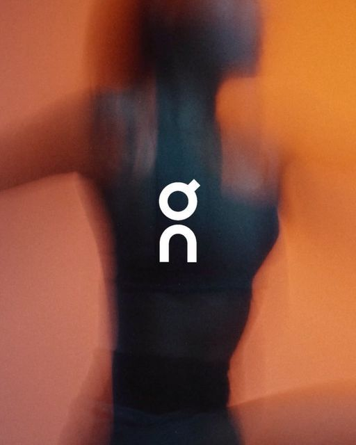
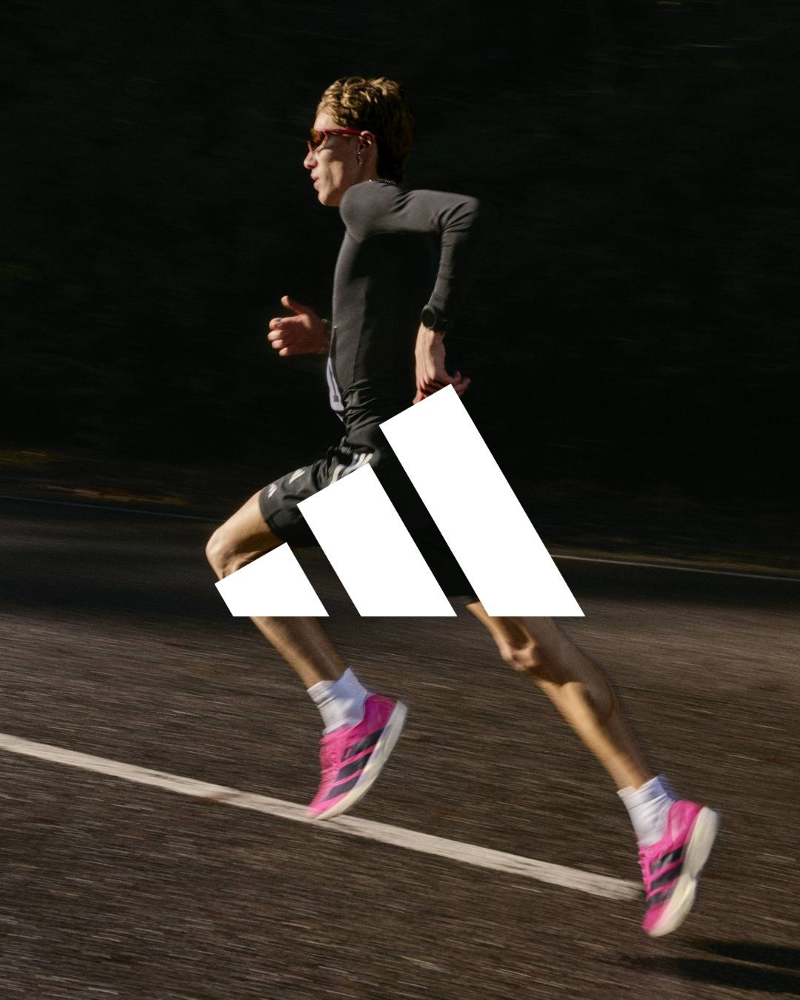
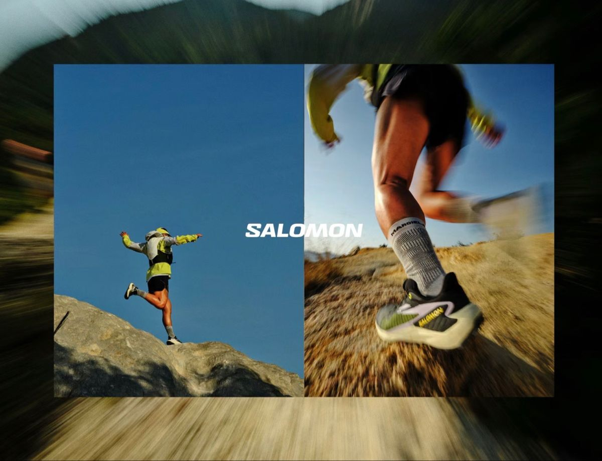

The Collective is our collaborative ecosystem where Trace partners with the world's most innovative running brands to push the boundaries of athletic performance. By combining our advanced technical craftsmanship with the unique design philosophies of global leaders, we create co-designed capsule collections that redefine the runner's experience.

Fusing HOKA's signature maximalist cushioning and rockered geometry with Trace's technical outerwear expertise. Together, we build products that deliver unparalleled comfort over ultra-distances and rugged trails.

Our collaboration with ASICS brings together Japanese precision engineering and Trace's modern aesthetic. We focus on enhancing stability and energy return, co-developing footwear that excels in high-performance road running.

Working side-by-side with On Running, we integrate their CloudTec® phase cushioning with our sustainable fabric technologies. This collaboration delivers featherlight, high-speed gear optimized for urban runners.

Partnering with Adidas, we blend their rich heritage in sportswear innovation with our forward-thinking aesthetics. Together, we create performance apparel that empowers runners to break boundaries.

Our collaboration with Salomon fuses their alpine expertise with our urban tech-wear focus. The result is rugged, trail-ready gear designed to withstand the harshest environments while keeping you moving fast.
Whether you're hitting trails or city streets, Trace gear is built for athletes who demand more from their kit.